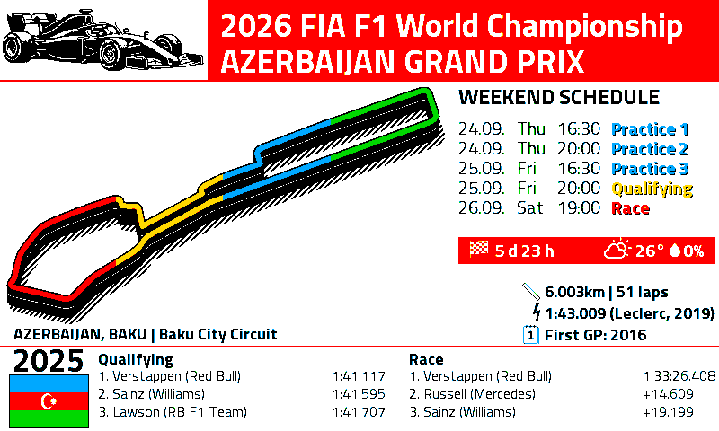
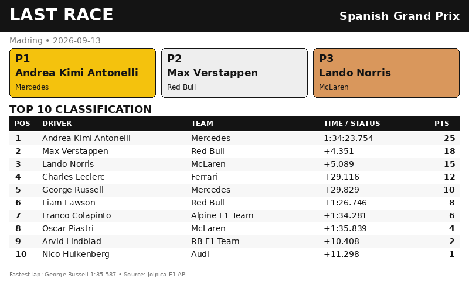
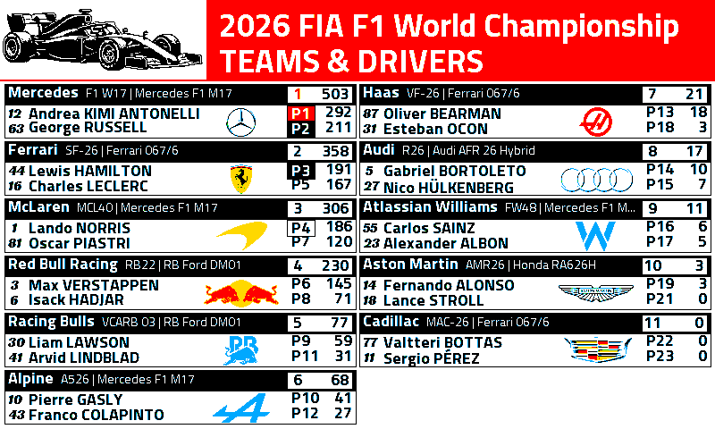

F1 Hub
Static GitHub F1 dashboard for Home Assistant
Updated Sat 12 Sep 2026, 02:25 AM

Next Grand Prix
Spanish Grand Prix
Madring • Madrid, Spain
Next session
in 16h 4m
Driver championship
1. Andrea Kimi Antonelli
267 pts
P2: George Russell • 201 pts
Constructor championship
1. Mercedes468 pts
2. Ferrari346 pts
3. McLaren287 pts
Race time
Current weather and the previous-year circuit reference are shown in the calendar image.
Driver championship
| # | Driver | Pts |
|---|---|---|
| 1 | Andrea Kimi AntonelliMercedes | 267 |
| 2 | George RussellMercedes | 201 |
| 3 | Lewis HamiltonFerrari | 191 |
| 4 | Lando NorrisMcLaren | 171 |
| 5 | Charles LeclercFerrari | 155 |
| 6 | Max VerstappenRed Bull | 127 |
| 7 | Oscar PiastriMcLaren | 116 |
| 8 | Isack HadjarRed Bull | 71 |
| 9 | Liam LawsonRB F1 Team | 51 |
| 10 | Pierre GaslyAlpine F1 Team | 41 |
| 11 | Arvid LindbladRB F1 Team | 29 |
| 12 | Franco ColapintoAlpine F1 Team | 21 |
| 13 | Oliver BearmanHaas F1 Team | 18 |
| 14 | Gabriel BortoletoAudi | 10 |
| 15 | Nico HülkenbergAudi | 6 |
Constructor championship
| # | Constructor | Pts |
|---|---|---|
| 1 | Mercedes | 468 |
| 2 | Ferrari | 346 |
| 3 | McLaren | 287 |
| 4 | Red Bull | 204 |
| 5 | RB F1 Team | 75 |
| 6 | Alpine F1 Team | 62 |
| 7 | Haas F1 Team | 21 |
| 8 | Audi | 16 |
| 9 | Williams | 11 |
| 10 | Aston Martin | 3 |
| 11 | Cadillac F1 Team | 0 |

Italian Grand Prix
Autodromo Nazionale di Monza • 2026-09-06
| # | Driver | Time / status | Pts |
|---|---|---|---|
| 1 | Andrea Kimi AntonelliMercedes | 1:51:15.281 | 25 |
| 2 | George RussellMercedes | +3.857 | 18 |
| 3 | Max VerstappenRed Bull | +14.718 | 15 |
| 4 | Lando NorrisMcLaren | +19.056 | 12 |
| 5 | Oscar PiastriMcLaren | +19.253 | 10 |
| 6 | Lewis HamiltonFerrari | +24.655 | 8 |
| 7 | Pierre GaslyAlpine F1 Team | +27.351 | 6 |
| 8 | Arvid LindbladRB F1 Team | +45.136 | 4 |
| 9 | Franco ColapintoAlpine F1 Team | +47.353 | 2 |
| 10 | Yuki TsunodaRB F1 Team | +58.187 | 1 |
Teams & drivers
